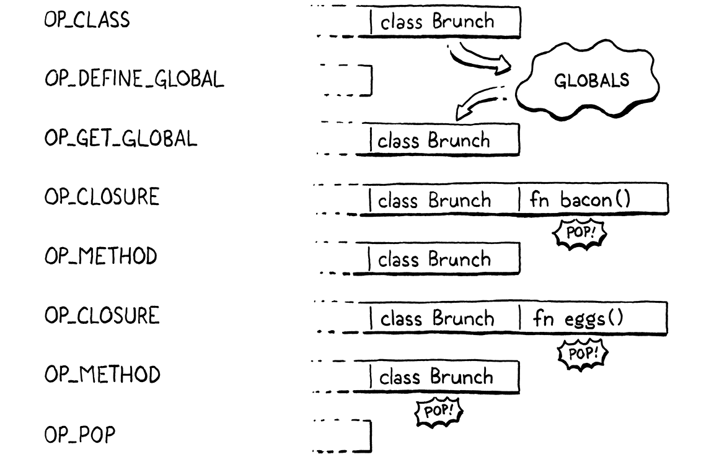
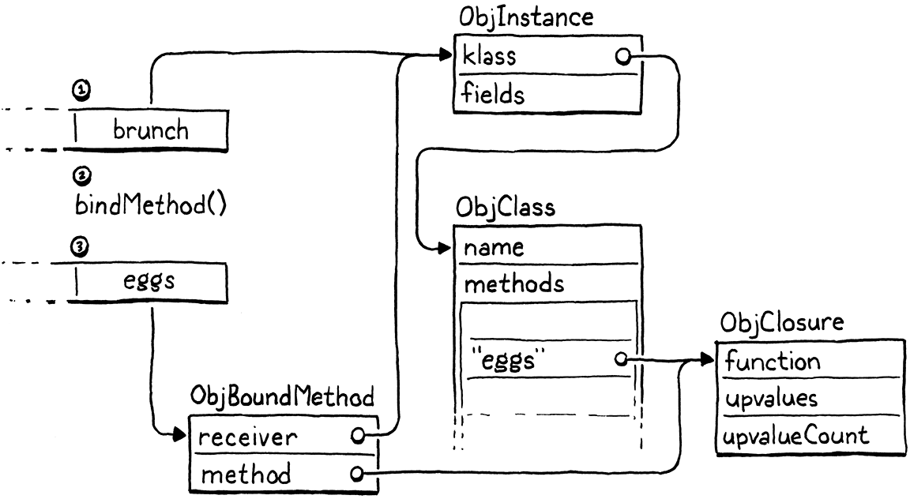
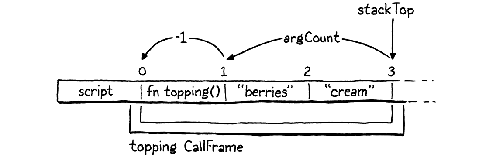
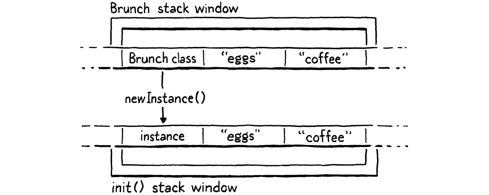
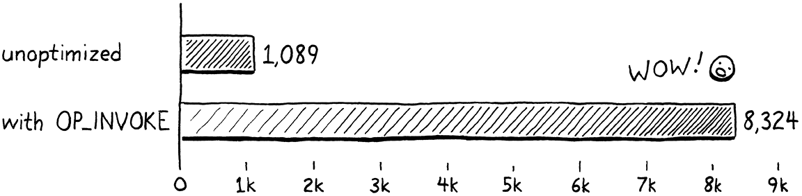

方法与初始化器
一旦站上舞池，就只剩跳舞这一件事可做。
翁贝托·埃科，《洛阿娜女王的神秘火焰》
是时候让我们的虚拟机用行为把这些初生的对象激活起来了。这意味着方法和方法调用。而既然初始化器是 一种特殊的方法，当然也算在内。
这一整套，全都是上一趟 jlox 之旅走过的熟路。这一趟真正的新东西，是一项重要 的优化：我们会让方法调用比基准性能快上七倍以上。不过在享受那份乐趣之前，我们得先把基本 功能跑通。
28 . 1方法声明
我们没法在还没有方法调用之前优化方法调用，也没法在还没有方法之前调用方法，所以从声明开始。
28 . 1 . 1表示方法
我们通常是从编译器开始的，但这回我们先把对象模型搞定。clox 里方法的运行时表示跟 jlox 差不多。每个类存一张方法的哈希表。键是方法名，每个值是方法体的 ObjClosure。
typedef struct {
Obj obj;
ObjString* name;
在结构体 ObjClass 内
Table methods;
} ObjClass;
一个崭新的类从一张空方法表开始。
klass->name = name;
在 newClass() 内
initTable(&klass->methods);
return klass;
ObjClass 结构体拥有这张表的内存，所以当内存管理器回收一个类时，这张表也该一起释放。
case OBJ_CLASS: {
在 freeObject() 内
ObjClass* klass = (ObjClass*)object; freeTable(&klass->methods);
FREE(ObjClass, object);
说到内存管理器，GC 需要追踪类、走进它的方法表。如果一个类还可达（很可能是通过某个实例）， 那它的所有方法当然也得留下来。
markObject((Obj*)klass->name);
在 blackenObject() 内
markTable(&klass->methods);
break;
我们用的是已有的 markTable() 函数，它会追踪每个表条目的键字符串和值。
从 jlox 过来，给类存方法相当熟悉。不同的部分在于这张表怎么被填满。上一个解释器能拿到整个 类声明的 AST 节点，以及它包含的所有方法。运行时，解释器只要遍历那份声明列表就行。
现在，编译器想交给运行时的每一点信息，都必须挤进一条扁平的字节码指令序列里。我们怎么 才能把一个类声明——它可能包含任意多的方法——表示成字节码？我们跳到编译器那边看看。
28 . 1 . 2编译方法声明
上一章留给我们一个能解析类、但只允许空函数体的编译器。现在我们插一点代码，编译花括号 之间的那一串方法声明。
consume(TOKEN_LEFT_BRACE, "Expect '{' before class body.");
在 classDeclaration() 内
while (!check(TOKEN_RIGHT_BRACE) && !check(TOKEN_EOF)) { method(); }
consume(TOKEN_RIGHT_BRACE, "Expect '}' after class body.");
Lox 没有字段声明，所以类体末尾那个右花括号之前的一切都必定是方法。碰到最后那个花括号、 或者读到文件末尾，我们就停止编译方法。后一项检查保证了一件事：万一用户不小心忘了写右花括号， 编译器不会卡在死循环里。
编译类声明的棘手之处在于，一个类可能声明任意多个方法。运行时总得想办法把它们全查出来
并绑定。这要塞进单条 OP_CLASS 指令可就太多了。所以我们为一个类声明生成的字节码，会把这个
过程拆成一连串指令。编译器本来就会发射一条 OP_CLASS 指令，
创建新的空 ObjClass 对象。然后它发射指令，把这个类以它的名字存进一个变量。
现在，对每一条方法声明，我们发射一条新的 OP_METHOD 指令，往那个类里加一个方法。当所有
OP_METHOD 指令都执行完，我们就得到了一个成型的类。用户眼里一个类声明是一个原子操作，
虚拟机却把它实现成了一连串修改。
要定义一个新方法，虚拟机需要三样东西：
-
方法的名字。
-
方法体的闭包。
-
要把方法绑定到哪个类上。
我们逐步写出编译器代码，看看这三样东西怎么一路传到运行时。从这里开始：
加在 function() 之后
static void method() { consume(TOKEN_IDENTIFIER, "Expect method name."); uint8_t constant = identifierConstant(&parser.previous); emitBytes(OP_METHOD, constant); }
跟 OP_GET_PROPERTY 以及其他在运行时需要名字的指令一样，编译器把方法名词法单元的词素加进
常量表，拿回一个表索引。然后我们发射一条 OP_METHOD 指令，把这个索引作为操作数。这就是
名字。接下来是方法体：
uint8_t constant = identifierConstant(&parser.previous);
在 method() 内
FunctionType type = TYPE_FUNCTION; function(type);
emitBytes(OP_METHOD, constant);
我们用编译函数声明时写的那个 function() 辅助函数。那个工具函数会编译后面的参数列表和
函数体，然后发射代码创建一个 ObjClosure 并把它留在栈顶。运行时会在那里找到这个闭包。
最后是要绑定方法的那个类。虚拟机去哪里找它？遗憾的是，等我们执行到 OP_METHOD 指令时，
我们并不知道它在哪里。它可能在栈上——如果用户把类声明在一个
局部作用域里的话。但一个顶层类声明最后会把 ObjClass 落到全局变量表里。
别担心。编译器确实知道这个类的名字。我们可以在吃掉那个词法单元之后立刻把它捕获下来。
consume(TOKEN_IDENTIFIER, "Expect class name.");
在 classDeclaration() 内
Token className = parser.previous;
uint8_t nameConstant = identifierConstant(&parser.previous);
而且我们知道，不可能有别的同名声明遮蔽这个类。所以我们走最省事的那条路：在开始绑定方法之前， 发射必要的代码，把这个类重新加载到栈顶。
defineVariable(nameConstant);
在 classDeclaration() 内
namedVariable(className, false);
consume(TOKEN_LEFT_BRACE, "Expect '{' before class body.");
在编译类体之前，我们正好调用 namedVariable()。这个辅助函数生成
代码，把指定名字的变量加载到栈上。然后我们编译那些方法。
这意味着，执行每一条 OP_METHOD 指令时，栈顶是方法的闭包，紧挨在它下面就是那个类。等方法们
编译完，我们就不再需要这个类了，于是让虚拟机把它从栈上弹掉。
consume(TOKEN_RIGHT_BRACE, "Expect '}' after class body.");
在 classDeclaration() 内
emitByte(OP_POP);
}
把所有这些拼起来，这里有一个可以丢给编译器的类声明例子：
class Brunch { bacon() {} eggs() {} }
给定这样的输入，编译器生成的内容如下，图中还标出了这些指令如何影响栈：

剩下的就是为那条新的 OP_METHOD 指令实现运行时部分。
28 . 1 . 3执行方法声明
首先定义操作码。
OP_CLASS,
在枚举 OpCode 内
OP_METHOD
} OpCode;
像其他带字符串常量操作数的指令一样，我们给它写反汇编。
case OP_CLASS:
return constantInstruction("OP_CLASS", chunk, offset);
在 disassembleInstruction() 内
case OP_METHOD: return constantInstruction("OP_METHOD", chunk, offset);
default:
解释器那边，我们同样加一个新分支。
break;
在 run() 内
case OP_METHOD: defineMethod(READ_STRING()); break;
}
在那里，我们从常量表读出方法名，传给这个函数：
加在 closeUpvalues() 之后
static void defineMethod(ObjString* name) { Value method = peek(0); ObjClass* klass = AS_CLASS(peek(1)); tableSet(&klass->methods, name, method); pop(); }
方法的闭包在栈顶，正好压在它将要绑定的那个类上面。我们读取那两个栈槽位，把闭包存进类的 方法表。然后把闭包弹出去——用完了。
注意，我们对闭包和类对象都没做任何运行时类型检查。那句 AS_CLASS() 是安全的，因为正是编译器
自己生成了让这个类待在那个栈槽位里的代码。虚拟机信任自己的编译器。
等这串 OP_METHOD 指令跑完、OP_POP 把类弹掉，我们就得到一个方法表塞得满满当当的类，
可以开始干活了。下一步是把那些方法再取出来用。
28 . 2方法引用
大多数时候，方法一取出来就立刻调用，于是有了这个眼熟的语法：
instance.method(argument);
但别忘了，在 Lox 和另外一些语言里，这两步是分开的，可以拆开。
var closure = instance.method; closure(argument);
既然用户确实可以把这两个操作拆开，我们就必须分开实现。第一步是用已有的点号属性语法， 去访问定义在实例所属类上的方法。它应该返回某种对象，用户随后就能像调用函数一样调用它。
最直接的做法是在类的方法表里查这个名字，返回与之关联的那个 ObjClosure。但我们还得记住：
你访问一个方法时，this 会绑定到访问它时所在的那个实例。这是我们在 jlox 里加方法那会儿给的例子：
class Person { sayName() { print this.name; } } var jane = Person(); jane.name = "Jane"; var method = jane.sayName; method(); // ?
这应该打印 “Jane”，所以 .sayName 返回的那个对象，得在日后被调用时，设法记住它是从哪个
实例上取下来的。在 jlox 里，我们用解释器原有的、堆上分配的 Environment 类来实现这份
「记忆」，那个类负责所有变量的存储。
我们的字节码虚拟机有一套更复杂的状态存储架构。局部变量和临时值在栈上， 全局变量在一张哈希表里，而闭包捕获的变量则用upvalue。这就要求 clox 里 得用一套稍微复杂些的方案来跟踪方法的接收者，还需要一个新的运行时类型。
28 . 2 . 1绑定方法
当用户执行一次方法访问时，我们找出那个方法的闭包，把它包进一个新的
「绑定方法」对象，这个对象记着方法是从哪个实例上取下来的。这个绑定对象之后可以像函数
一样被调用。被调用时，虚拟机会做些手脚，把 this 接到方法体里的接收者上。
新对象类型长这样：
} ObjInstance;
加在结构体 ObjInstance 之后
typedef struct { Obj obj; Value receiver; ObjClosure* method; } ObjBoundMethod;
ObjClass* newClass(ObjString* name);
它把接收者和方法闭包包在一起。接收者的类型是 Value，尽管方法只能在 ObjInstance 上调用。反正 虚拟机也不在乎接收者是什么类型，用 Value 就意味着当它被传给更通用的函数时，我们不必反复把 指针转回 Value。
新结构体意味着那套你现在已经很熟悉的样板代码。先在对象类型枚举里加一个新分支：
typedef enum {
在枚举 ObjType 内
OBJ_BOUND_METHOD,
OBJ_CLASS,
一个测试值类型的宏：
#define OBJ_TYPE(value) (AS_OBJ(value)->type)
#define IS_BOUND_METHOD(value) isObjType(value, OBJ_BOUND_METHOD)
#define IS_CLASS(value) isObjType(value, OBJ_CLASS)
另一个把值转成 ObjBoundMethod 指针的宏：
#define IS_STRING(value) isObjType(value, OBJ_STRING)
#define AS_BOUND_METHOD(value) ((ObjBoundMethod*)AS_OBJ(value))
#define AS_CLASS(value) ((ObjClass*)AS_OBJ(value))
一个创建新 ObjBoundMethod 的函数：
} ObjBoundMethod;
加在结构体 ObjBoundMethod 之后
ObjBoundMethod* newBoundMethod(Value receiver, ObjClosure* method);
ObjClass* newClass(ObjString* name);
这个函数的实现在这里：
加在 allocateObject() 之后
ObjBoundMethod* newBoundMethod(Value receiver, ObjClosure* method) { ObjBoundMethod* bound = ALLOCATE_OBJ(ObjBoundMethod, OBJ_BOUND_METHOD); bound->receiver = receiver; bound->method = method; return bound; }
这个构造函数一般的函数只是把传进来的闭包和接收者存下来。等绑定方法不再需要时，我们释放它。
switch (object->type) {
在 freeObject() 内
case OBJ_BOUND_METHOD: FREE(ObjBoundMethod, object); break;
case OBJ_CLASS: {
绑定方法握着几个引用，但它们并不归它所有，所以除了自己，它什么都不释放。不过那些引用 确实会被垃圾回收器追踪。
switch (object->type) {
在 blackenObject() 内
case OBJ_BOUND_METHOD: { ObjBoundMethod* bound = (ObjBoundMethod*)object; markValue(bound->receiver); markObject((Obj*)bound->method); break; }
case OBJ_CLASS: {
这确保了一个指向方法的句柄会把接收者留在内存里，这样等你之后
调用这个句柄时，this 还能找到那个对象。我们也追踪方法闭包。
所有对象都支持的最后一个操作是打印。
switch (OBJ_TYPE(value)) {
在 printObject() 内
case OBJ_BOUND_METHOD: printFunction(AS_BOUND_METHOD(value)->method->function); break;
case OBJ_CLASS:
绑定方法的打印方式和函数一模一样。从用户的视角看，绑定方法就是函数，是他们能调用的对象。 我们不会把「虚拟机用另一种对象类型来实现绑定方法」这件事暴露出去。
戴上你的派对帽子吧，因为我们刚到达一个小里程碑。ObjBoundMethod 是
要加进 clox 的最后一个运行时类型。你的最后一个 IS_ 和 AS_ 宏也写完了。离全书结束只剩
几章，我们也越来越接近一个完整的虚拟机。
28 . 2 . 2访问方法
让这个新对象类型干点活吧。方法是用上一章实现的同一套「点号」属性语法访问的。编译器已经会
解析相应的表达式，并为它们发射 OP_GET_PROPERTY 指令。我们要改的只有运行时部分。
属性访问指令执行时，实例在栈顶。这条指令的活儿是找到给定名字的字段或方法，然后用访问到的 属性替换栈顶。
解释器已经处理了字段，所以只要给 OP_GET_PROPERTY 那个分支再加一小段就行。
pop(); // 实例。
push(value);
break;
}
在 run() 内
替换 2 行
if (!bindMethod(instance->klass, name)) { return INTERPRET_RUNTIME_ERROR; } break;
}
我们把它插在「在接收者实例上查字段」那段代码之后。字段优先于方法，并且会遮蔽方法，所以我们 先找字段。如果实例没有给定属性名的字段，那么这个名字可能指的是一个方法。
我们取出实例的类，交给一个新的 bindMethod() 辅助函数。如果那个函数找到了方法，它就把方法
放到栈上并返回 true。否则返回 false，表示没找到这个名字的方法。既然这个名字也不是字段，
那就意味着遇到了运行时错误，我们中止解释器。
正戏来了：
加在 callValue() 之后
static bool bindMethod(ObjClass* klass, ObjString* name) { Value method; if (!tableGet(&klass->methods, name, &method)) { runtimeError("Undefined property '%s'.", name->chars); return false; } ObjBoundMethod* bound = newBoundMethod(peek(0), AS_CLOSURE(method)); pop(); push(OBJ_VAL(bound)); return true; }
首先我们在类的方法表里查找给定名字的方法。如果没找到，就报告一个运行时错误并退出。否则， 我们取出这个方法，把它包进一个新的 ObjBoundMethod。接收者就在栈顶上它自己的位置上。最后 我们弹出实例，用绑定方法替换栈顶。
举个例子：
class Brunch { eggs() {} } var brunch = Brunch(); var eggs = brunch.eggs;
虚拟机为 brunch.eggs 这个表达式执行 bindMethod() 调用时，发生的正是这些事：

底下一堆机关，但从用户的角度看，他们只是拿到了一个能调用的函数。
28 . 2 . 3调用方法
用户可以在类上声明方法、在实例上访问方法、把绑定方法放到栈上。他们就是没法拿这些绑定方法
对象干点什么有用的事。我们缺的那个操作就是调用它们。调用是在
callValue() 里实现的，所以我们在那儿为这个新对象类型加一个分支。
switch (OBJ_TYPE(callee)) {
在 callValue() 内
case OBJ_BOUND_METHOD: { ObjBoundMethod* bound = AS_BOUND_METHOD(callee); return call(bound->method, argCount); }
case OBJ_CLASS: {
我们从 ObjBoundMethod 里把那个原始闭包重新取出来，用已有的 call() 辅助函数启动对它的
调用——做法是给它在调用栈上压入一个调用帧。就这些，已经足够跑这个 Lox 程序了：
class Scone { topping(first, second) { print "scone with " + first + " and " + second; } } var scone = Scone(); scone.topping("berries", "cream");
三步搞定。我们能声明方法、访问方法、调用方法了。但还缺点什么。我们费了那么大力气把方法闭包 包进一个绑定接收者的对象里，可调用方法的时候，我们压根没用那个接收者。
28 . 3This
绑定方法之所以要攥着接收者不放，是为了让方法体内部能访问到它。Lox 通过 this 表达式把方法
的接收者暴露出来。该上点新语法了。词法分析器已经把 this 当作一种特殊的词法单元类型，所以
第一步是把这个词法单元接进解析表。
[TOKEN_SUPER] = {NULL, NULL, PREC_NONE},
替换 1 行
[TOKEN_THIS] = {this_, NULL, PREC_NONE},
[TOKEN_TRUE] = {literal, NULL, PREC_NONE},
解析器在前缀位置遇到 this 时，会分派到一个新的解析函数。
加在 variable() 之后
static void this_(bool canAssign) { variable(false); }
在 clox 里实现 this，我们沿用 jlox 中用过的同一套手法。我们把 this 当作一个词法作用域的
局部变量，它的值则被魔法般地初始化好。像编译局部变量那样编译它，意味着我们白捡了很多行为。
尤其是，方法内部引用 this 的闭包会做出正确的行为，把接收者捕获进一个 upvalue。
解析器函数被调用时，this 词法单元刚被消费掉，存成了前一个词法单元。我们调用已有的
variable() 函数，它负责把标识符表达式编译成变量访问。它有一个布尔参数，表示编译器是否该
去找后面跟着的 = 运算符并解析出一个 setter。不能给 this 赋值，所以我们传 false 来禁止
这件事。
variable() 函数并不在乎 this 有自己的词法单元类型、不是标识符。它乐意把词素 “this” 当作
一个变量名来处理，再用现有的作用域解析机制去查找它。此刻那次查找会失败，因为我们从来没
声明过一个名字叫 “this” 的变量。是时候想想接收者该待在内存的哪儿了。
至少在被闭包捕获之前，clox 把每个局部变量都存在虚拟机的栈上。编译器记着函数的那个栈窗口里， 哪些槽位归哪些局部变量所有。你应该还记得，编译器是靠声明一个名字为空字符串的局部变量， 来预留栈槽位零的。
对函数调用来说，那个槽位最终装的是被调用的函数。由于它没有名字，函数体永远不会访问它。你能
猜到这要通向哪里。对方法调用，我们可以把这个槽位挪用来存接收者。槽位零会存 this 所
绑定的那个实例。为了编译 this 表达式，编译器只需要给那个局部变量起对名字就行。
local->isCaptured = false;
在 initCompiler() 内
替换 2 行
if (type != TYPE_FUNCTION) { local->name.start = "this"; local->name.length = 4; } else { local->name.start = ""; local->name.length = 0; }
}
我们只想对方法这么做。函数声明里没有 this。而且事实上，它们绝不能声明一个叫 “this” 的
变量，这样当你写一个 this 表达式——它位于某个函数声明内部，而这个函数声明又位于某个方法
内部——那个 this 才会正确地解析到外层方法的接收者。
class Nested { method() { fun function() { print this; } function(); } } Nested().method();
这个程序应该打印 “Nested instance”。为了决定给局部槽位零起什么名字，编译器需要知道自己编译的 是函数声明还是方法声明，于是我们在 FunctionType 枚举里加一个新分支来区分方法。
TYPE_FUNCTION,
在枚举 FunctionType 内
TYPE_METHOD,
TYPE_SCRIPT
编译方法时，我们用的就是这个类型。
uint8_t constant = identifierConstant(&parser.previous);
在 method() 内
替换 1 行
FunctionType type = TYPE_METHOD;
function(type);
现在我们能正确编译对那个特殊的 “this” 变量的引用了，编译器会发射正确的 OP_GET_LOCAL 指令
来访问它。闭包甚至能捕获 this，把接收者存进 upvalue 里。挺酷的。
只不过在运行时，接收者其实并不在槽位零里。解释器还没履行它那一半的约定。修法在这儿：
case OBJ_BOUND_METHOD: {
ObjBoundMethod* bound = AS_BOUND_METHOD(callee);
在 callValue() 内
vm.stackTop[-argCount - 1] = bound->receiver;
return call(bound->method, argCount);
}
方法被调用时，栈顶是全部实参，而在这些实参正下方就是被调用方法的闭包。新建的调用帧里，槽位 零就是那个位置。这行代码把接收者插进那个槽位。举个例子，给定这样一个方法调用：
scone.topping("berries", "cream");
存接收者的那个槽位，我们这样算：

-argCount 跳过那些实参，- 1 则是为了修正一个事实：stackTop 指向的是最后一个用过的
栈槽位的再往后一位。
28 . 3 . 1错误使用 this
我们的虚拟机现在支持用户正确使用 this 了，但还得确保它能妥善处理用户错误使用
this 的情况。Lox 规定：this 表达式出现在方法体之外就是编译错误。下面这两种错误用法都该
由编译器抓住：
print this; // 在顶层。 fun notMethod() { print this; // 在函数里。 }
那么编译器怎么知道自己在一个方法里面？显而易见的答案是看当前 Compiler 的 FunctionType。我们 刚刚确实在那里加了一个枚举分支来特殊对待方法。但这没法正确处理前面那个例子：你在一个函数 里面，而这个函数自己又嵌套在某个方法里面。
我们可以试着解析 “this”，如果周边所有词法作用域里都找不到，就报个错。这行得通，但需要我们 把一堆代码挪来挪去，因为眼下解析一个变量的代码在找不到任何声明时，会隐含地把它当成一次 全局访问。
下一章我们会需要关于最近的外层类的信息。要是手上有这个信息，这里就能用它来判断我们是否在 方法里面。所以不妨顺手让未来的自己轻松一点，现在就把那套机制搭好。
Compiler* current = NULL;
加在变量 current 之后
ClassCompiler* currentClass = NULL;
static Chunk* currentChunk() {
这个模块级变量指向一个结构体，代表当前正在编译的、最内层的那个类。新类型长这样：
} Compiler;
加在结构体 Compiler 之后
typedef struct ClassCompiler { struct ClassCompiler* enclosing; } ClassCompiler;
Parser parser;
目前我们只存一个指针，指向外层类的 ClassCompiler（如果有的话）。把一个类声明嵌套在另一个 类的某个方法里，这种事不常见，但 Lox 支持它。就跟 Compiler 结构体一样，这意味着 ClassCompiler 从当前正在编译的最内层类一路串出去、穿过所有外层类，形成一条链表。
如果我们根本不在任何类声明里面，模块变量 currentClass 就是 NULL。当编译器开始编译一个类时，
它把一个新的 ClassCompiler 压到那条隐式链表栈上。
defineVariable(nameConstant);
在 classDeclaration() 内
ClassCompiler classCompiler; classCompiler.enclosing = currentClass; currentClass = &classCompiler;
namedVariable(className, false);
ClassCompiler 结构体的内存就在 C 栈上——这是我们用递归下降写编译器白捡的一个方便能力。类体 结束时，我们把那个编译器从栈上弹下来，恢复外层那个。
emitByte(OP_POP);
在 classDeclaration() 内
currentClass = currentClass->enclosing;
}
最外层类体结束时，enclosing 会是 NULL，所以这行把 currentClass 重置为 NULL。于是，要
判断我们是否在一个类里面——也就是是否在一个方法里面——只要看一眼那个模块变量就行。
static void this_(bool canAssign) {
在 this_() 内
if (currentClass == NULL) { error("Can't use 'this' outside of a class."); return; }
variable(false);
有了这个，类外使用 this 就被正确地禁止了。现在我们的方法在面向对象的意义上真的像方法了。
拿到接收者，它们就能影响你调用方法时所在的那个实例。快到了！
28 . 4实例初始化器
面向对象语言之所以把状态和行为捆在一起——这是该范式的核心信条之一——是为了确保对象 始终处于一个有效、有意义的状态。当触碰一个对象状态的唯一途径是通过 它的方法时，那些方法就能保证不出乱子。但这前提是对象已经处于合适的状态。那它刚被创建的 时候呢？
面向对象语言靠构造函数来保证崭新的对象被正确设置妥当——构造函数既产出一个新实例，也初始化 它的状态。在 Lox 里，运行时分配的是原始实例，而一个类可以声明一个初始化器来设置各个字段。 初始化器大体上和普通方法一样，只是有几处改动：
-
每当一个类的实例被创建时，运行时会自动调用初始化器方法。
-
构造实例的调用方总能在初始化器跑完之后把实例拿回来，不管 初始化器函数本身返回了什么。初始化器方法不需要显式地
return this。 -
事实上，初始化器被禁止返回任何值，因为那个值反正永远也不会被看到。
既然我们已经支持了方法，要加上初始化器，只需实现那三条特殊规则。我们一条一条来。
28 . 4 . 1调用初始化器
第一，在新实例上自动调用 init()：
vm.stackTop[-argCount - 1] = OBJ_VAL(newInstance(klass));
在 callValue() 内
Value initializer; if (tableGet(&klass->methods, vm.initString, &initializer)) { return call(AS_CLOSURE(initializer), argCount); }
return true;
运行时分配出新实例之后，我们在类上找一个 init() 方法。如果找到了，就发起对它的调用。这会
为初始化器的闭包压入一个新的调用帧。假设我们跑这个程序：
class Brunch { init(food, drink) {} } Brunch("eggs", "coffee");
虚拟机执行 Brunch() 这个调用时，是这样的：

我们调用这个类时传进去的任何实参，仍然待在栈上、位于实例之上。init() 方法的新调用帧共享
同一个栈窗口，所以那些实参就隐式地转发给了初始化器。
Lox 不要求类必须定义初始化器。如果没定义，运行时直接返回那个刚创建的、未经初始化的实例。
不过，如果没有 init() 方法，那么在创建实例时还往类上传实参就毫无意义了。我们把这当成一个
错误。
return call(AS_CLOSURE(initializer), argCount);
在 callValue() 内
} else if (argCount != 0) { runtimeError("Expected 0 arguments but got %d.", argCount); return false;
}
当类确实提供了初始化器时，我们还得确保传入的实参个数与初始化器的参数个数相符。幸好
call() 辅助函数已经替我们做了这件事。
为了调用初始化器，运行时按名字查找 init() 方法。我们希望这一步快，因为每构造一个实例都要
做一次。也就是说，最好利用我们已经实现的字符串驻留。要这么做，虚拟机为 “init” 创建一个
ObjString 然后反复复用。这个字符串就住在 VM 结构体里。
Table strings;
在结构体 VM 内
ObjString* initString;
ObjUpvalue* openUpvalues;
虚拟机启动时，我们创建并驻留这个字符串。
initTable(&vm.strings);
在 initVM() 内
vm.initString = copyString("init", 4);
defineNative("clock", clockNative);
我们希望它一直活着，所以 GC 把它当作一个根。
markCompilerRoots();
在 markRoots() 内
markObject((Obj*)vm.initString);
}
仔细看。有没有哪个 bug 正在等着发生？没有？这是个微妙的 bug。垃圾回收器现在会读 vm.initString
字段。而这个字段是由调用 copyString() 的结果初始化的。但复制一个字符串要分配内存，这可能
触发一次 GC。如果收集器恰好在错误的时间跑起来，它就会读到尚未初始化过的 vm.initString。所以，
我们要先把字段清零。
initTable(&vm.strings);
在 initVM() 内
vm.initString = NULL;
vm.initString = copyString("init", 4);
虚拟机关闭时我们把这个指针清空，因为下一行就要释放它了。
freeTable(&vm.strings);
在 freeVM() 内
vm.initString = NULL;
freeObjects();
好，这下我们能调用初始化器了。
28 . 4 . 2初始化器的返回值
下一步是确保：构造一个带初始化器的类的实例时，返回的总是那个新实例，而不是 nil，也不是
初始化器函数体返回的别的东西。目前，如果一个类定义了初始化器，那么实例被构造时，虚拟机会
把一次对它的调用压进调用帧栈，然后继续一路跑下去。
用户在类上的那次调用，会在初始化器方法返回时结束，而栈上留下的是初始化器放进去的那个值。
这意味着，除非用户特意在初始化器末尾写上 return this;，否则什么实例都不会出来。实在没什么
用。
要修这个，只要前端在编译一个初始化器方法时，就在函数体末尾发射不同的字节码，让方法返回
this，而不是大多数函数默认返回的那个隐式 nil。要做到这一点，编译器就得真的知道自己
正在编译一个初始化器。我们靠检查当前正在编译的方法名是不是 “init” 来判断。
FunctionType type = TYPE_METHOD;
在 method() 内
if (parser.previous.length == 4 && memcmp(parser.previous.start, "init", 4) == 0) { type = TYPE_INITIALIZER; }
function(type);
我们定义一个新的函数类型，把初始化器和其他方法区分开。
TYPE_FUNCTION,
在枚举 FunctionType 内
TYPE_INITIALIZER,
TYPE_METHOD,
每当编译器在函数体末尾发射那个隐式返回时，我们检查类型，决定是否要插入初始化器特有的行为。
static void emitReturn() {
在 emitReturn() 内
替换 1 行
if (current->type == TYPE_INITIALIZER) { emitBytes(OP_GET_LOCAL, 0); } else { emitByte(OP_NIL); }
emitByte(OP_RETURN);
在初始化器里，返回之前不再把 nil 压栈，而是加载槽位零——那里装着那个实例。编译一个不带值的
return 语句时也会调用这个 emitReturn()，所以用户在初始化器内部提前返回的情形也被正确处理了。
28 . 4 . 3初始化器里的错误返回
最后一步，初始化器那串特殊特性清单的最后一项：从初始化器里试图返回别的任何东西，都得变成 一个错误。现在编译器已经跟踪方法类型了，这很简单。
if (match(TOKEN_SEMICOLON)) {
emitReturn();
} else {
在 returnStatement() 内
if (current->type == TYPE_INITIALIZER) { error("Can't return a value from an initializer."); }
expression();
如果初始化器里一条 return 语句带了值，我们就报一个错误。不过我们之后仍然会把那个值编译出来，
这样编译器就不会被后面这个表达式搞糊涂，报出一大串连锁错误。
除了继承——我们很快就来讲——clox 里现在已经有了一套功能相当完整的类系统。
class CoffeeMaker { init(coffee) { this.coffee = coffee; } brew() { print "Enjoy your cup of " + this.coffee; // 咖啡渣别留到第二杯！ this.coffee = nil; } } var maker = CoffeeMaker("coffee and chicory"); maker.brew();
对一个能塞进一张旧式软盘的 C 程序来说，这已经够花哨了。
28 . 5优化的调用
我们的虚拟机已经正确实现了语言对方法调用和初始化器的语义。到这儿就可以收工了。但我们之所以 从零开始做整个第二版 Lox 实现，主要是为了跑得比那个旧的 Java 解释器快。眼下即便是 clox 里的方法调用也很慢。
Lox 的语义把一次方法调用定义为两个操作——访问方法，然后调用它的结果。虚拟机必须把它们当成 两个独立操作来支持，因为用户确实可以把它们拆开。你可以只访问方法而不调用它，之后再调用 那个绑定方法。我们到目前为止实现的每一样东西都不多余。
但总是把它们当成两个独立操作执行，代价相当可观。Lox 程序每一次访问并调用一个方法，运行时 都要在堆上分配一个新的 ObjBoundMethod，初始化它的字段，然后又马上把它们取出来。之后 GC 还得 花时间释放这一大把朝生暮死的绑定方法。
大多数时候，Lox 程序访问一个方法，紧接着就调用它。绑定方法由一条字节码指令创建，然后被下一条 指令消费掉。事实上这件事如此紧挨着，以至于编译器甚至能从文本上看出来——一次点号属性访问 后面紧跟一个左括号，多半就是方法调用。
既然我们能在编译期认出这对操作，就有机会发射一条全新的、专门的指令， 用它来做一次优化的方法调用。
我们从编译点号属性表达式的那个函数开始。
if (canAssign && match(TOKEN_EQUAL)) {
expression();
emitBytes(OP_SET_PROPERTY, name);
在 dot() 内
} else if (match(TOKEN_LEFT_PAREN)) { uint8_t argCount = argumentList(); emitBytes(OP_INVOKE, name); emitByte(argCount);
} else {
编译器解析完属性名之后，我们去找一个左括号。如果匹配上了，就切到一条新的代码路径。在那里，
我们完全像编译调用表达式那样编译参数列表。然后发射一条新的 OP_INVOKE 指令。它带两个操作数：
-
属性名在常量表里的索引。
-
传给方法的实参个数。
换句话说，这一条指令把它所取代的 OP_GET_PROPERTY 和 OP_CALL 两条指令的操作数按顺序合在
了一起。它真的是那两条指令的融合。我们来定义它。
OP_CALL,
在枚举 OpCode 内
OP_INVOKE,
OP_CLOSURE,
再加进反汇编器：
case OP_CALL:
return byteInstruction("OP_CALL", chunk, offset);
在 disassembleInstruction() 内
case OP_INVOKE: return invokeInstruction("OP_INVOKE", chunk, offset);
case OP_CLOSURE: {
这是一种全新的、专门的指令格式，所以需要一点定制的反汇编逻辑。
加在 constantInstruction() 之后
static int invokeInstruction(const char* name, Chunk* chunk, int offset) { uint8_t constant = chunk->code[offset + 1]; uint8_t argCount = chunk->code[offset + 2]; printf("%-16s (%d args) %4d '", name, argCount, constant); printValue(chunk->constants.values[constant]); printf("'\n"); return offset + 3; }
我们读出两个操作数，然后把方法名和实参个数都打印出来。真正的好戏在解释器的字节码分派循环 里开场。
}
在 run() 内
case OP_INVOKE: { ObjString* method = READ_STRING(); int argCount = READ_BYTE(); if (!invoke(method, argCount)) { return INTERPRET_RUNTIME_ERROR; } frame = &vm.frames[vm.frameCount - 1]; break; }
case OP_CLOSURE: {
大部分工作发生在 invoke() 里，我们待会儿就去看它。在这里，我们从第一个操作数里取出方法名，
再读出实参个数这个操作数。然后把重活交给 invoke()。调用成功时那个函数返回 true。跟平常
一样，返回 false 意味着发生了运行时错误。我们在这里检查这一点，一旦灾难降临就中止解释器。
最后，假定调用成功，那么栈上就有了一个新的调用帧，于是我们刷新 frame 里缓存的当前帧副本。
有意思的活儿在这儿：
加在 callValue() 之后
static bool invoke(ObjString* name, int argCount) { Value receiver = peek(argCount); ObjInstance* instance = AS_INSTANCE(receiver); return invokeFromClass(instance->klass, name, argCount); }
首先我们从栈上取下接收者。传给方法的实参在栈上位于它之上，所以我们往下探那么多个槽位。接着 只要把对象转成实例、在它上面调用方法就行了。
不过这确实假定了那个对象就是一个实例。和 OP_GET_PROPERTY 指令一样，我们也得处理用户
错误地在类型不对的值上调用方法的情况。
Value receiver = peek(argCount);
在 invoke() 内
if (!IS_INSTANCE(receiver)) { runtimeError("Only instances have methods."); return false; }
ObjInstance* instance = AS_INSTANCE(receiver);
这是个运行时错误，所以我们报告它并退出。否则，我们取到实例的类， 跳到另一个新工具函数去：
加在 callValue() 之后
static bool invokeFromClass(ObjClass* klass, ObjString* name, int argCount) { Value method; if (!tableGet(&klass->methods, name, &method)) { runtimeError("Undefined property '%s'.", name->chars); return false; } return call(AS_CLOSURE(method), argCount); }
这个函数把虚拟机实现 OP_GET_PROPERTY 和 OP_CALL 指令的逻辑按顺序合在了一起。首先我们
在类的方法表里按名字查找方法。如果没找到，就报告那个运行时错误并退出。
否则，我们取出方法的闭包，把一次对它的调用压进调用帧栈。我们不需要在堆上分配并初始化一个 ObjBoundMethod。事实上，我们甚至不需要在栈上耍杂技：接收者和 方法实参已经待在它们该在的位置了。
现在启动虚拟机，跑一个会调用方法的小程序，你应该会看到跟之前一模一样的行为。但如果我们的活儿
干对了，性能应该大有改善。我写了个小小的基准测试：做一批一万次方法调用，然后测试 10 秒内
能跑完多少批。在我机器上，没有新的 OP_INVOKE 指令时，它跑完了 1,089 批；加上这项新优化，
同样时间里跑完了 8,324 批。这是快了 7.6 倍，放到编程语言优化的语境里，是巨大的提升。

28 . 5 . 1调用字段
优化的基本信条是：「你不可破坏正确性。」用户当然喜欢语言实现更快地 给出答案，但前提是那必须是正确的答案。可惜，我们这套更快的调用实现没能守住这条原则：
class Oops { init() { fun f() { print "not a method"; } this.field = f; } } var oops = Oops(); oops.field();
最后一行看起来像方法调用。编译器也这么认为，乖乖地给它发射了一条 OP_INVOKE 指令。然而它不是。
真正发生的是一次字段访问，返回一个函数，然后这个函数被调用。此刻我们的虚拟机没有正确
执行它，而是在找不到名为 “field” 的方法时报了一个运行时错误。
早先实现 OP_GET_PROPERTY 时，我们同时处理了字段访问和方法访问。要压掉这个新 bug，
OP_INVOKE 也得这么做。
ObjInstance* instance = AS_INSTANCE(receiver);
在 invoke() 内
Value value; if (tableGet(&instance->fields, name, &value)) { vm.stackTop[-argCount - 1] = value; return callValue(value, argCount); }
return invokeFromClass(instance->klass, name, argCount);
修起来很简单。在实例的类上查找方法之前，我们先找同名的字段。如果找到了字段，我们把它存到
栈上接收者的位置、也就是实参列表的下面。这正是 OP_GET_PROPERTY 的行为，因为后一条指令
是在后面那个括号里的实参列表求值之前执行的。
然后我们试着像调用那个「但愿是可调用的」东西那样，调用这个字段的值。callValue() 辅助函数会
检查值的类型，按合适的方式调用它；如果这个字段的值不是闭包这类可调用的类型，就报一个运行时
错误。
这就足以让我们的优化彻底安全了。遗憾的是，我们确实牺牲了一点性能。但有时候这就是你要付的价钱。 你偶尔会遇到这种沮丧：要不是语言不允许某个讨厌的边界情况，你本可以做某个优化。但作为语言 实现者，我们只能打手里拿到的这副牌。
我们在这里写的代码遵循了优化中一个典型的套路：
-
识别出一种常见的、对性能至关重要的操作或操作序列。这个场景里，是一次方法访问后紧跟 一次调用。
-
为这个模式加一个优化过的实现。就是我们的
OP_INVOKE指令。 -
用一些条件逻辑给优化代码加护栏，验证这个模式确实适用。如果适用，就留在快路径上；否则 退回到更慢但更稳健的未优化行为。这里就是检查我们确实是在调用方法，而不是在访问字段。
随着你的语言工作从「让它勉强能跑」转向「让它跑得更快」，你会发现自己花在寻找这类模式、 并为它们添加带护栏的优化上的时间越来越多。全职的虚拟机工程师，职业生涯里很大一部分时间都在 这个循环里打转。
不过眼下我们就打住这儿。到此，clox 已经支持了面向对象编程语言的大部分特性，而且性能也体面。
习题
-
在哈希表里查找一个类的
init()方法是常数时间，但仍然相当慢。实现一个更快的办法。写个 基准测试，量一量性能差距。 -
在 Lox 这样的动态类型语言里，整个程序执行期间，一个调用点可能在若干个类上调用各种各样的 方法。即便如此，实践中大多数时候，一个调用点在整轮运行中最终调用的都是同一个类上的同一个 方法。即便语言说调用可以是多态的，大多数调用其实并不是。
高级的语言实现如何基于这个观察来做优化？
-
解释一条
OP_INVOKE指令时，虚拟机得做两次哈希表查找。先找可能遮蔽方法的字段，只有 失败时才去找方法。前一次检查很少有用——大多数字段里装的不是函数。但它是必要的，因为 语言规定字段和方法用同一套语法访问，而字段会遮蔽方法。这是一个影响我们实现性能的语言选择。这个选择对吗？如果 Lox 是你的语言，你会怎么做？
设计说明：新意预算
我仍然记得第一次在 TRS-80 上写了一个小小的 BASIC 程序，让一台计算机做出它以前从没做过的事。 那感觉就像拥有了超能力。第一次我东拼西凑出刚好够用的语法解析器和解释器，让我能用我自己 的语言写一个小程序、指使计算机做件事——那感觉像是某种高阶版的元超能力。那种感觉曾经是、 现在也仍然很美妙。
我意识到，我可以设计出一门外观和行为都由我决定的语言。那感觉就像我一辈子都在一所要求穿 校服的私立学校念书，然后有一天转学去了公立学校，可以想穿什么穿什么。我非得用花括号来划块吗？ 我可以用等号以外的东西做赋值吗？我可以不要类就搞出对象吗？多重继承外加多重方法？一门按参数 个数做静态重载的动态语言？
当然，我抓住这份自由一路狂奔。我做了最古怪、最任性的语言设计决定。泛型用撇号。实参之间不写 逗号。重载决议可以在运行时失败。我做事与众不同，纯粹就为了不一样。
这是种非常有趣的体验，我极力推荐。我们需要更多古怪的、前卫的编程语言。我想看更多的艺术 语言。我现在偶尔还为了好玩做些古怪的玩具语言。
不过，如果你的目标是成功，而「成功」被定义为用户数量庞大，那么你的优先事项就必须不同。 那种情况下，你的首要目标就是让你的语言装进尽可能多的大脑里。那真的很难。把一门语言的语法 和语义从计算机搬进上万亿个神经元，需要投入巨大的人力。
程序员天生珍惜自己的时间，对什么语言值得上传进自己的「湿件」也很谨慎。他们不想把时间 浪费在一个最终对自己没用的语言上。所以，作为语言设计者，你的目标就是：用尽可能少的学习成本， 把尽可能多的语言能力交给他们。
一个自然的做法是简单。你的语言里的概念和特性越少，要学的东西总量就越少。这也是极简的 脚本语言常常能找到成功的原因，尽管它们没有那些大型工业语言那么 强大——它们更容易上手，而且一旦装进某个人的脑子里，用户就想一直用下去。
简单带来的问题在于，光是砍特性往往会牺牲能力和表达力。找出哪些特性能以小博大，这本身是一门 艺术；但很多时候，极简的语言就是做得更少。
还有另一条路，能避开这个问题的大部分。诀窍是意识到：用户不必把你整门语言都装进脑子， 只需要装他们还不具备的那部分。正如我在前面一篇设计说明里提过的，学习的关键 是把他们已经知道的东西和他们需要知道的东西之间的差值搬过去。
你语言的很多潜在用户已经会别的某种编程语言。你的语言与那种语言共享的每一个特性，就学习而言 基本是「免费」的。它已经在他们脑子里了，他们只需要认出你的语言做的是同一件事。
换句话说，熟悉度是另一个降低语言采用成本的关键工具。当然，如果你把这个属性拉满，最后得到的 就是一门跟某个已有语言一模一样的语言。那不是成功的配方，因为到那一步，用户根本没有任何理由 切换到你的语言。
所以你确实得提供一些有说服力的差异。别的语言做不到、或者至少做不到同样好的事情，你得有一些。 我认为这是语言设计最根本的平衡动作之一：与其他语言相似会降低学习成本，而差异则抬高那些引人 注目的优势。
我把这个平衡想成一个新意预算——用史蒂夫·克拉布尼克的话 说，是一份「怪异度预算」。用户对于「为了学一门新语言，愿意接受多少 总量的新东西」，阈值很低。超了，他们就不来了。
每当你往语言里加一样别的语言没有的新东西，或者每当你的语言用一种不同的方式去做别的语言 也在做的事，你都在花掉一部分预算。这没关系——你需要花，才能让你的语言有吸引力。但你的目标是 明智地花。面对每一项特性或差异，先问自己它给你的语言增加了多少吸引力，然后批判性地 评估它是否物有所值。这项改变是否足够有价值，值得你挥霍掉一部分新意预算？
实践中我发现，这意味着你在语法上会相当保守，在语义上却更大胆。换一身新衣服固然好玩，但把 花括号换成别的块分隔符，几乎不可能给语言增加多少真正的能力，却实实在在花掉了一些新意。语法 上的差异很难自己挣回成本。
另一方面，新的语义可以大幅提升语言的能力。多重方法、混入、特质、反射、依赖类型、运行时元 编程等等，能把用户能用这门语言做到的事整个拉高一个量级。
唉，像这样保守，远没有「把一切都改掉」那么好玩。但要不要追主流成功，归根结底是你自己决定。 我们不必人人都去当电台放得响的流行乐队。如果你想让你的语言像自由爵士或者 drone metal，而且 能接受按比例更小（但可能更铁杆）的听众规模，那就放手去做吧。